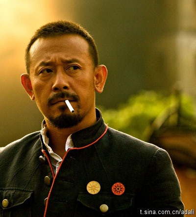

回复@陈加兴:我印象中，姜文的成就不是按2010年来划分的，他的霸气在《北京人在纽约》时就有耳闻。也许是现在研究他的人更多了而已。对做父母的人来说，养孩子都是像做试验品。 //@陈加兴:回复@Ada李力:2010年之前，姜文还是那个姜文，但有几个中国父母愿意养姜文式的孩子？呵呵！@Ada李力:这样的家庭只是个必要条件吧，民主信任平和的父母教养出来的孩子通常不会太差，但不保证就能养出姜文来。不过读了还是很受益。分享孟迁的博文：什么样的家庭养出了姜文 推荐给@头条博客 网页链接 